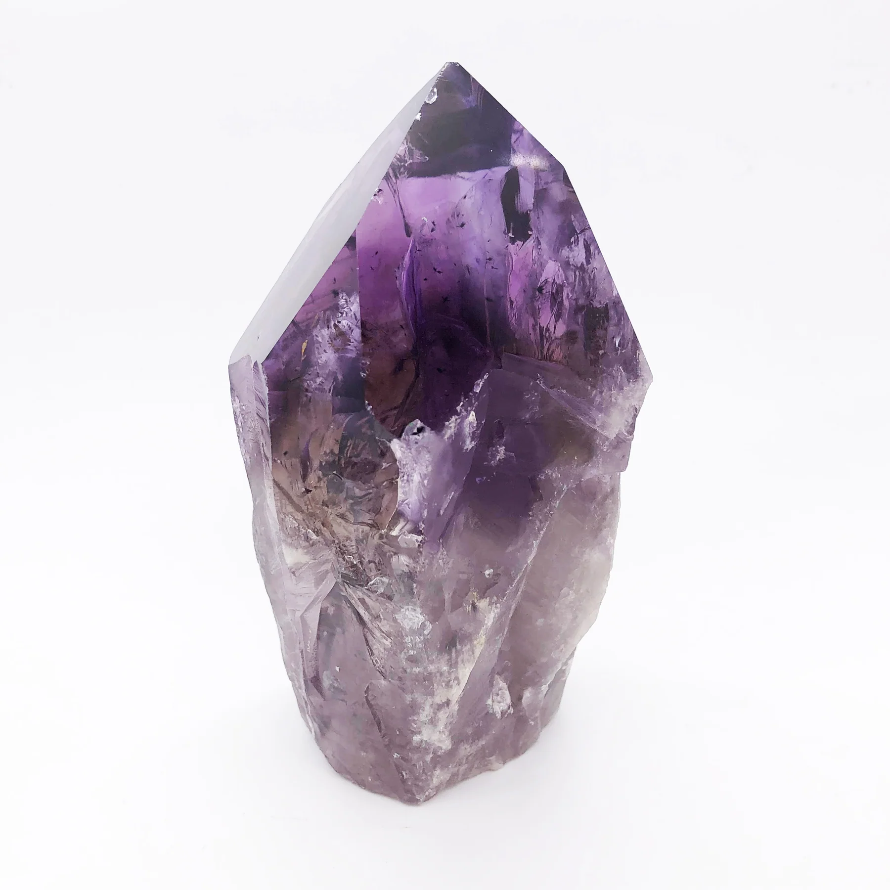

MINERAALIT -GEOLOGINEN TIETOISKU
HUOM! Tämä sivusto on toteutettu opiskelun harjoituksen osana, eikä ole virallinen tietolähde.
Mitä mineraalit ovat?
Mineraalit ovat alkuaineista koostuvia tavallisesti kiteisessä muodossa olevia kemiallisia yhdisteitä. Kivet koostuvat mineraaleista. Mineraalit ovat siis kivilajien perusrakenneosia.
Erilaisia mineraaleja:
Kvartsi
Kvartsi on yksi maankuoren yleisimmistä mineraaleista. Puhdas kvartsi on väritöntä. Kvartsilla on useita erilaisia värimuunnoksia, jotka johtuvat pienistä määristä muita alkuaineita tai mineraaleja. Kvartsia hyödynnetään teollisuuden raaka-aineena sekä korukivenä.
Granaatti
Granaatti on sikilaattimineraaliryhmä, joka tunnetaan parhaiten syvänpunaisena jalokivenä. Granaatit ovat suosittuja korukiviä. Granaatin mineraaliryhmään kuuluu esimerkiksi almandiini, pyrooppi ja andradiitti.
Topaasi
Topaasi kuuluu silikaattimineraaleihin. Topaasin väri voi vaihdella runsaasti, sitä on esimerkiksi keltaisena, punaisena ja sinisenä. Sinistä topaasia löytyy suomestakin, esimerkiksi Oriveden Eräjärveltä.

Ametisti
Ametisti on violetti kvartsin värimuunnos. Ametisti on jalokivi, ja parhaat ametistilaadut voidaan viistehioa.
Lisätietoja
Fluoriitti
Fluoriitti on kalsiumfluoriitin mineraalimuoto. Puhdas fluoriitti on väritöntä, mutta epäpuhtaudet tekevät siitä erityisen värikkään, jonka vuoksi sitä löytyy punaisen, sinisen, vihreän, keltaisen ja violetin sävyissä.
Lisätietoja